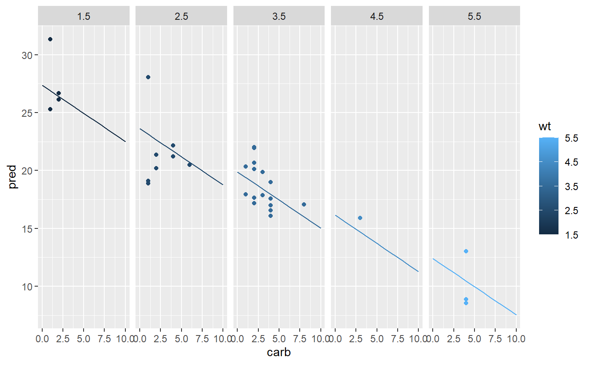
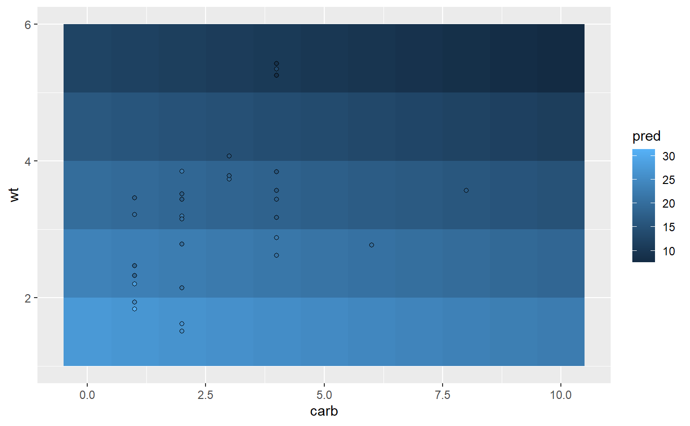
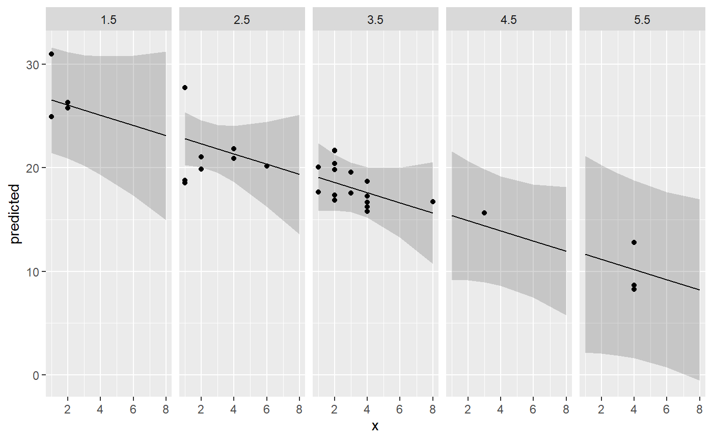
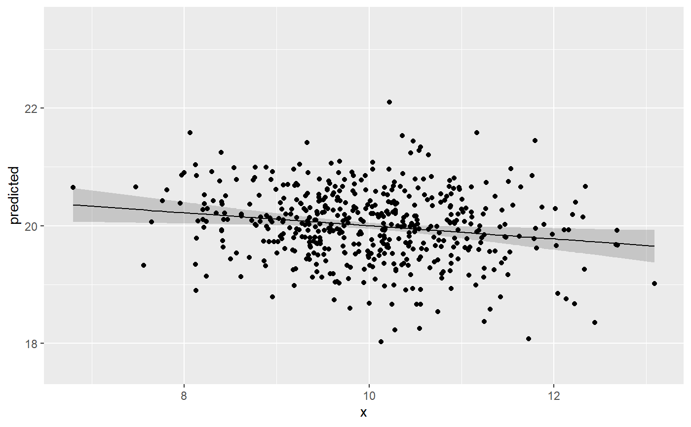
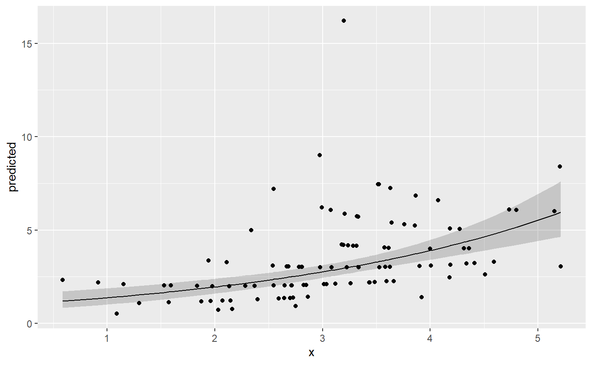
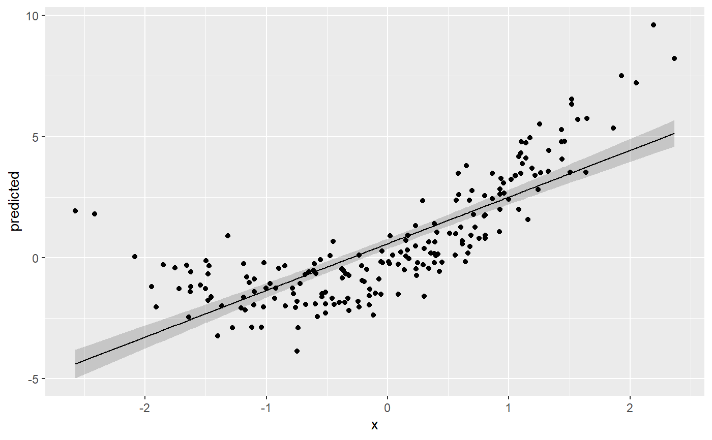
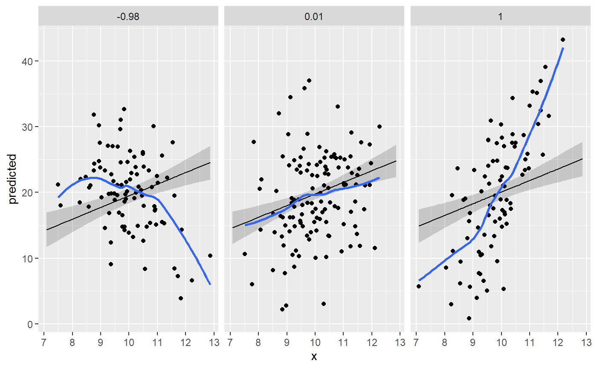
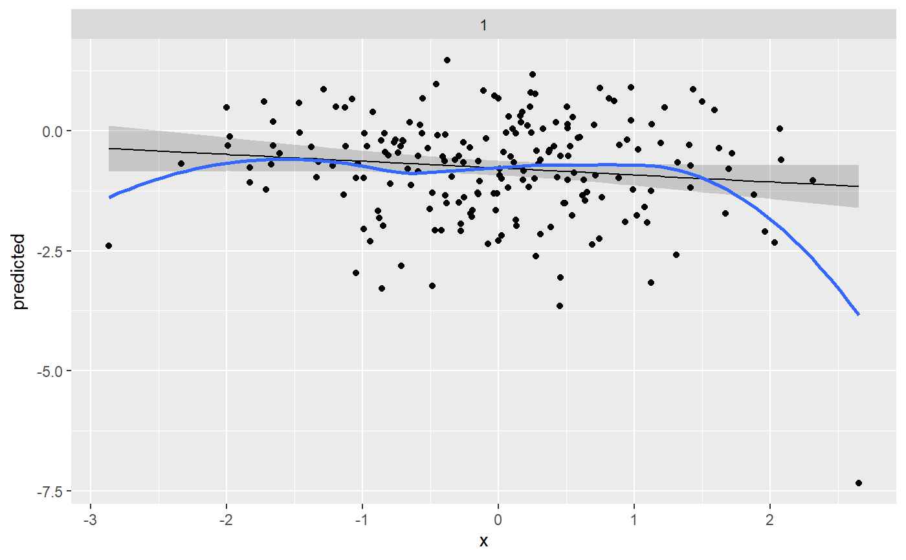
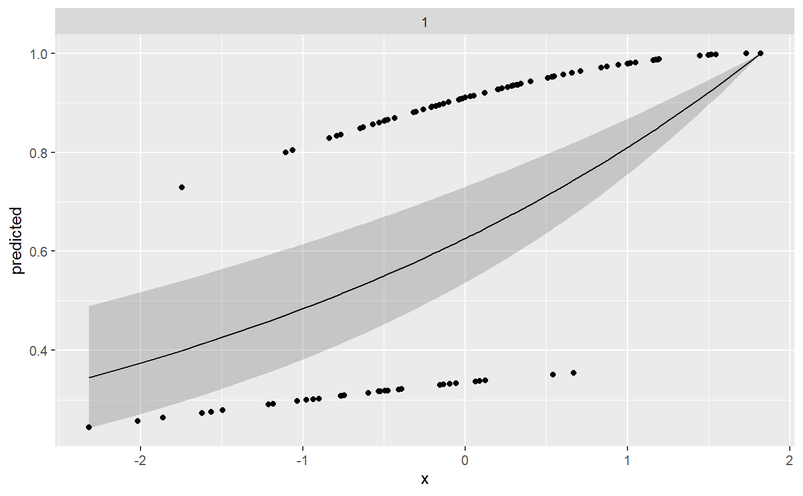
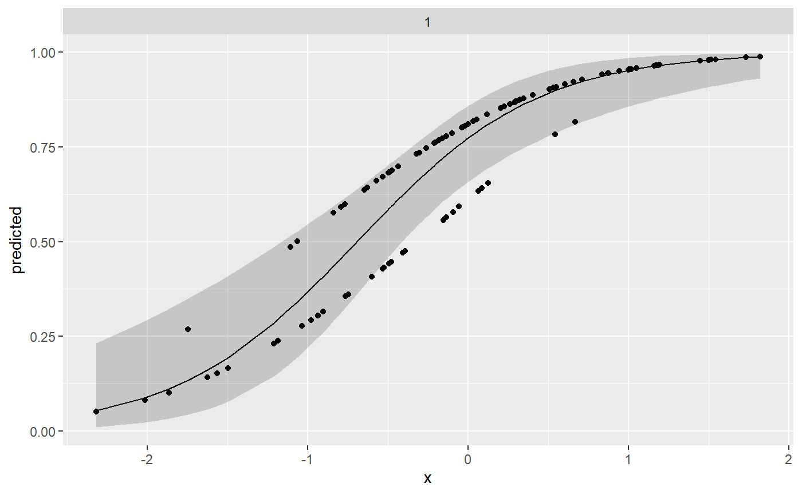

Residualize data over a data grid
residualize_over_grid.RdAllows for the plotting of partial regression plots.
residualize_over_grid(grid, model, keep = NULL, ...) # S3 method for data.frame residualize_over_grid(grid, model, keep = NULL, pred_name = NULL, ...) # S3 method for ggeffects residualize_over_grid( grid, model, keep = attr(grid, "terms")[1], protect_gge_names = TRUE, ... )
Arguments
| grid | A data grid. Data must be completely crossed (e.g., made with |
|---|---|
| model | The original model object. |
| keep | Optional character vector of predictors that should not be
matched with the |
| ... | Arguments passed to |
| pred_name | Additional column name in |
| protect_gge_names | Return the data with the original columns names
( |
Examples
library(ggplot2) library(ggeffects) set.seed(1) # Basic Example ----------------------------------------------------------- mtcars$cyl <- factor(mtcars$cyl) mtcars$am <- factor(mtcars$am) m <- lm(mpg ~ cyl * wt + am * carb, data = mtcars) ## Grid with expand.grid newdata <- expand.grid(cyl = "6", am = "0", carb = seq(0, 10), wt = seq(1.5,5.5, by = 1)) newdata$pred <- predict(m, newdata = newdata) ggplot(newdata, aes(carb, pred, color = wt)) + facet_grid(~wt) + geom_line() + geom_point(data = residualize_over_grid(newdata, m, pred_name = "pred"))ggplot(newdata, aes(carb, wt, fill = pred)) + geom_raster() + geom_point(data = residualize_over_grid(newdata, m, keep = c("carb", "wt"), pred_name = "pred"), shape = 21)#>ggplot(gge, aes(x, predicted)) + facet_grid(~group) + geom_ribbon(aes(ymin = conf.low, ymax = conf.high), color = NA, alpha = 0.2) + geom_line() + geom_point(data = residualize_over_grid(gge,m))# Bayes Example ----------------------------------------------------------- if (require("rstanarm")) { m <- stan_glm(mpg ~ cyl * wt + am * carb, data = mtcars, refresh = 0) gge <- ggemmeans(m, c("carb [0:10]", "wt[2:4 by=0.5]"), condition = list(am = "0", cyl = "6")) # works best when x is [all] ggplot(gge, aes(x, predicted)) + facet_grid(~group) + geom_ribbon(aes(ymin = conf.low, ymax = conf.high), color = NA, alpha = 0.2) + geom_line() + geom_point(data = residualize_over_grid(gge,m)) }#>#>#>#>#>#>#># Plot Suppression -------------------------------------------------------- S <- diag(1, 3, 3) S[1,2] <- S[2,1] <- 0.6 S[1,3] <- S[3,1] <- 0.8 S[2,3] <- S[3,2] <- 0.8 dat <- MASS::mvrnorm(500, c(10,20,30), S, empirical = TRUE) colnames(dat) <- c("X","Y","Z") dat <- data.frame(dat) m <- lm(Y ~ X + Z, data = dat) gge <- ggpredict(m, "X [all]") ggplot(gge, aes(x, predicted)) + geom_ribbon(aes(ymin = conf.low, ymax = conf.high), color = NA, alpha = 0.2) + geom_line() + geom_point(data = residualize_over_grid(gge,m)) + lims(y = range(dat$Y))# GLMs -------------------------------------------------------------------- ## Poisson X <- rnorm(100) + 3 Y <- rpois(100, X) m <- glm(Y ~ X, family = poisson()) gge <- ggpredict(m, "X [all]") ggplot(gge, aes(x, predicted)) + geom_ribbon(aes(ymin = conf.low, ymax = conf.high), color = NA, alpha = 0.2) + geom_line() + geom_point(data = residualize_over_grid(gge, m, type = "working"))## Binomial dat <- data.frame( outcome = rbinom(n = 100, size = 5, prob = 0.35), var_binom = as.factor(rbinom(n = 100, size = 1, prob = 0.2)), var_cont = rnorm(n = 100, mean = 10, sd = 7), group = sample(letters[1:4], size = 100, replace = TRUE) ) m <- glm(cbind(outcome, 5 - outcome) ~ var_binom + var_cont, data = dat, family = binomial(link = "logit")) gge <- ggpredict(m, c("var_cont [all]","var_binom")) ggplot(gge, aes(x, predicted)) + facet_grid(~group) + geom_ribbon(aes(ymin = conf.low, ymax = conf.high), color = NA, alpha = 0.2) + geom_line() + geom_point(data = residualize_over_grid(gge,m, type = "working")) + lims(y = c(0,1))# Detect Non-Linear Assoc ------------------------------------------------- X <- rnorm(200) Z <- rnorm(200) Y <- 2 * X + X ^ 2 + 4 * Z + rnorm(200) df <- data.frame(X, Y, Z) m <- lm(Y ~ X + Z, df) gge <- ggemmeans(m, c("X [all]")) # works best when x is [all] ggplot(gge, aes(x, predicted)) + geom_ribbon(aes(ymin = conf.low, ymax = conf.high), color = NA, alpha = 0.2) + geom_line() + geom_point(data = residualize_over_grid(gge,m))# Detect Interaction ------------------------------------------------------ X <- rnorm(300, mean = 10) Z <- rnorm(300) V <- rnorm(300) Y <- (4*Z + 2)*X - 40*Z + 5*V + rnorm(300, sd = 3) m <- lm(Y ~ X + Z) gge <- ggemmeans(m, c("X [all]", "Z")) ggplot(gge, aes(x, predicted)) + facet_wrap(~group) + geom_ribbon(aes(ymin = conf.low, ymax = conf.high), color = NA, alpha = 0.2) + geom_line() + geom_point(data = residualize_over_grid(gge,m, type = "working")) + geom_smooth(data = residualize_over_grid(gge,m, type = "working"), se = F)#># Detect Outliers --------------------------------------------------------- X <- sort(rnorm(200)) Z <- rnorm(200) Y <- c(rnorm(199) + 20 * Z[-200],20) m <- lm(Y ~ X + Z) gge <- ggemmeans(m, c("X [all]")) ggplot(gge, aes(x, predicted)) + facet_wrap(~group) + geom_ribbon(aes(ymin = conf.low, ymax = conf.high), color = NA, alpha = 0.2) + geom_line() + geom_point(data = residualize_over_grid(gge,m, type = "working")) + geom_smooth(data = residualize_over_grid(gge,m, type = "working"), se = F)#># Detect Wrong Link Function ---------------------------------------------- X <- rnorm(100) Y <- as.numeric((plogis(X) + rnorm(100, sd = .2)) > 0.4) ## Log fit1 <- glm(Y ~ X, family = binomial(link = "log"), start = log(c(.1,.5)))#> Warning: step size truncated due to divergence#> Warning: step size truncated due to divergence#> Warning: step size truncated: out of bounds#> Warning: step size truncated due to divergence#> Warning: step size truncated: out of bounds#> Warning: step size truncated: out of bounds#> Warning: step size truncated: out of bounds#> Warning: step size truncated: out of bounds#> Warning: step size truncated: out of bounds#> Warning: step size truncated: out of bounds#> Warning: step size truncated: out of bounds#> Warning: step size truncated: out of bounds#> Warning: step size truncated: out of bounds#> Warning: step size truncated: out of bounds#> Warning: step size truncated: out of bounds#> Warning: step size truncated: out of bounds#> Warning: step size truncated: out of bounds#> Warning: step size truncated: out of bounds#> Warning: step size truncated: out of bounds#> Warning: step size truncated: out of bounds#> Warning: step size truncated: out of bounds#> Warning: step size truncated: out of bounds#> Warning: step size truncated: out of bounds#> Warning: step size truncated: out of bounds#> Warning: step size truncated: out of bounds#> Warning: step size truncated: out of bounds#> Warning: step size truncated: out of bounds#> Warning: glm.fit: algorithm did not converge#> Warning: glm.fit: algorithm stopped at boundary value#> Warning: glm.fit: fitted probabilities numerically 0 or 1 occurredgge <- ggemmeans(fit1, c("X [all]")) ggplot(gge, aes(x, predicted)) + facet_wrap(~group) + geom_ribbon(aes(ymin = conf.low, ymax = conf.high), color = NA, alpha = 0.2) + geom_line() + geom_point(data = residualize_over_grid(gge,fit1, type = "response"))## Logit fit2 <- glm(Y ~ X, family = binomial("logit")) gge <- ggemmeans(fit2, c("X [all]")) ggplot(gge, aes(x, predicted)) + facet_wrap(~group) + geom_ribbon(aes(ymin = conf.low, ymax = conf.high), color = NA, alpha = 0.2) + geom_line() + geom_point(data = residualize_over_grid(gge,fit2, type = "response"))